🎖️ 无畏：诺曼底
Undaunted: Normandy · 设计：David Thompson & Trevor Benjamin · Osprey Games 出版 · 2 人 · 官方英文规则书全文翻译（24 页 · AI 辅助机翻）
本页收录《无畏：诺曼底》（Undaunted: Normandy, 2019）的原版官方规则书全部 24 页（底本：Osprey Games 官方 Gaming Resources（ospreypublishing.com board & card games 资源页），lr_undaunted_normandy_rulebook.pdf），逐页随图排列，点击任意图片即可放大查看；每页下方默认折叠了该页的 AI 辅助中文机翻对照，需要时可展开。规则内容归 Osprey Games 及版权方所有，收录仅供个人学习查阅。
整理说明：机翻对照按本站术语口径对齐（牌库/手牌/回合/轮/板块/指示物等），PDF 图文混排页的语序可能与原书视觉顺序略有出入；规则细节请一律以页面上方原书页面为准。
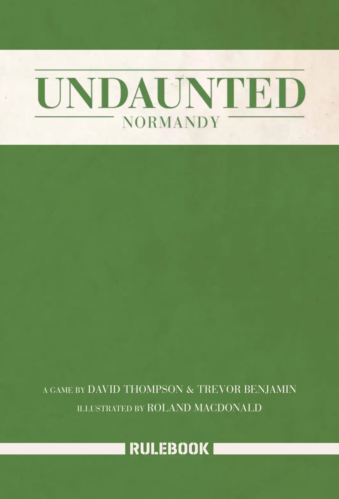
📝 第 1 页 AI 机翻对照（点击展开）
一款由 DAVID THOMPSON & TREVOR BENJAMIN 设计的游戏
由 ROLAND MACDONALD 插图
规则书
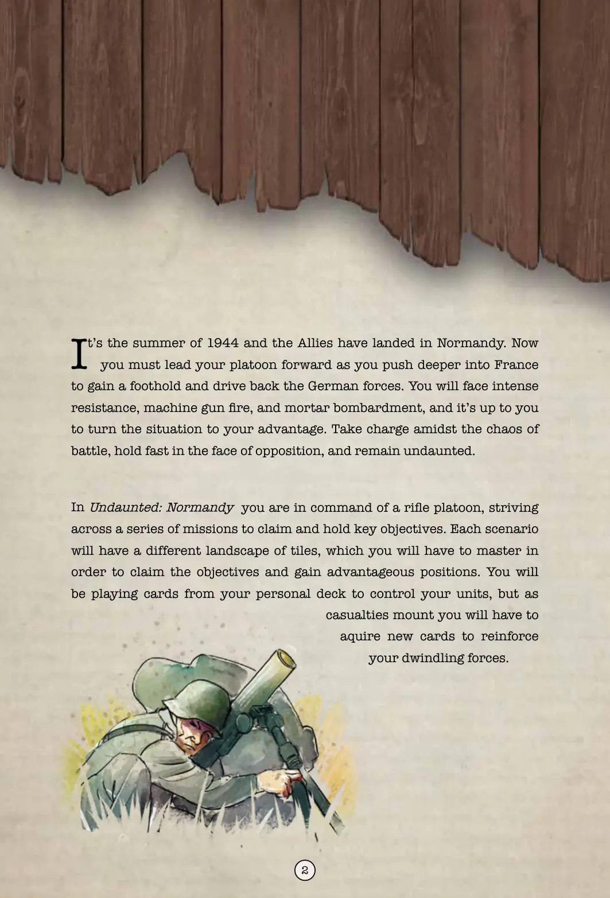
📝 第 2 页 AI 机翻对照（点击展开）
I
t's the summer of 1944 and the Allies have landed in Normandy. Now
you must lead your platoon forward as you push deeper into France
to gain a foothold and drive back the German forces. You will face intense
resistance, machine gun fire, and mortar bombardment, and it's up to you
to turn the situation to your advantage. Take charge amidst the chaos of
battle, hold fast in the face of opposition, and remain undaunted.
In Undaunted: Normandy you are in command of a rifle platoon, striving
across a series of missions to claim and hold key objectives. Each scenario
will have a different landscape of tiles, which you will have to master in
order to claim the objectives and gain advantageous positions. You will
be playing cards from your personal deck to control your units, but as
casualties mount you will have to
aquire new cards to reinforce
your dwindling forces.
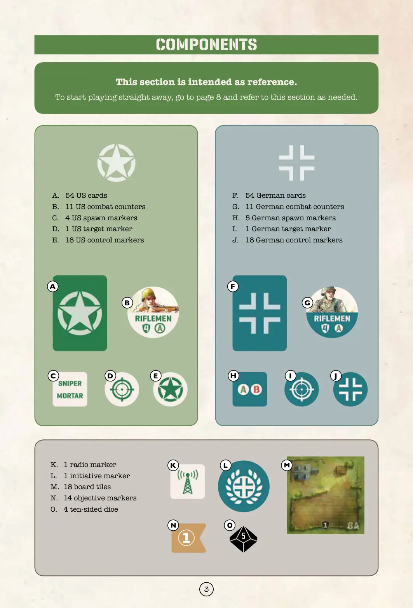
📝 第 3 页 AI 机翻对照（点击展开）
游戏组件
本节仅供参考。
如需立即开始游戏，请翻至第8页，并根据需要参考本节。
A. 54张美军卡牌
B. 11个美军战斗指示物
C. 4个美军生成标记
D. 1个美军目标标记
E. 18个美军控制标记
F. 54张德军卡牌
G. 11个德军战斗指示物
H. 5个德军生成标记
I.
1个德军目标标记
J. 18个德军控制标记
K. 1个无线电标记
L. 1个先手标记
M. 18个板块
N. 14个目标标记
O. 4个十面骰子
A
B
E
C
D
F
G
J
H
I
N
K
L
M
O
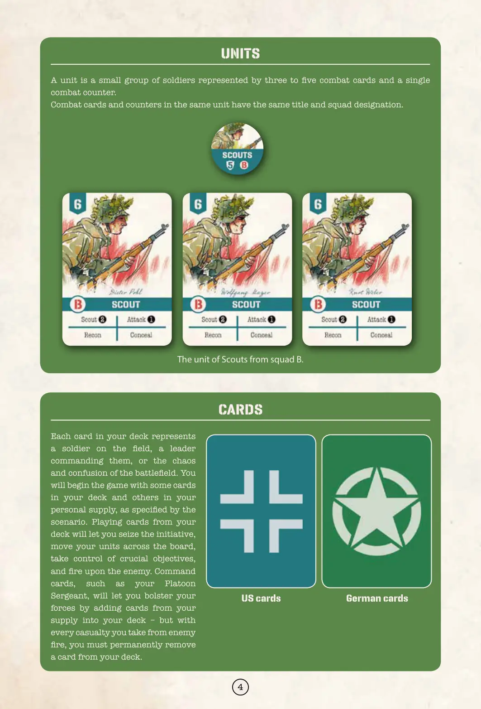
📝 第 4 页 AI 机翻对照（点击展开）
卡牌
你牌库中的每张卡牌都代表战场上的士兵、指挥他们的领导者，或战场的混乱与困惑。游戏开始时，根据场景说明，你将有一些卡牌在你的牌库中，其他卡牌在你的个人补给区中。从你的牌库中打出卡牌将让你掌握主动权，在版图上移动你的单位，控制关键目标，并向敌人开火。指挥卡牌，如你的排军士，允许你通过从补给区将卡牌加入你的牌库来增强你的部队——但每当你在敌人火力下遭受伤亡时，你必须永久从你的牌库中移除一张卡牌。
美军卡牌
德军卡牌
单位
单位是由三到五张战斗卡牌和一个战斗指示物代表的一小组士兵。
同一单位中的战斗卡牌和指示物具有相同的名称和小队 designation。
来自B小队的侦察兵单位。
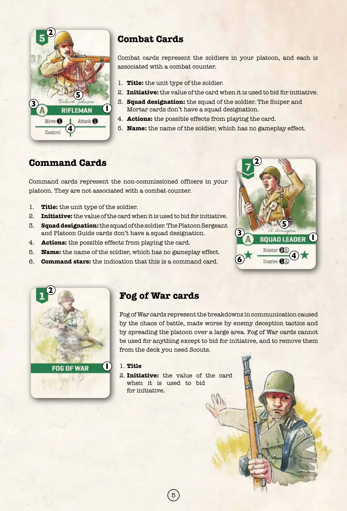
📝 第 5 页 AI 机翻对照（点击展开）
战斗卡
战斗卡代表你排中的士兵，每张卡都与一个战斗指示物相关联。
- 标题：士兵的单位类型。
- 主动值：当用于竞标主动权时卡牌的数值。
- 小队 designation：士兵的小队。狙击手和迫击手卡牌没有小队 designation。
- 行动：打出卡牌可能产生的效果。
- 名称：士兵的名称，对游戏玩法没有影响。
指挥卡
指挥卡代表你排中的军士。它们不与战斗指示物相关联。
- 标题：士兵的单位类型。
- 主动值：当用于竞标主动权时卡牌的数值。
- 小队 designation：士兵的小队。排军士和排向导卡牌没有小队 designation。
- 行动：打出卡牌可能产生的效果。
- 名称：士兵的名称，对游戏玩法没有影响。
- 指挥星：表明这是一张指挥卡的标志。
战争迷雾卡
战争迷雾卡代表因战斗混乱导致的通信中断，由于敌人的欺骗战术和分散排的部署而加剧。战争迷雾卡不能用于任何目的，只能用于竞标主动权，要将其从牌库中移除你需要侦察兵。
1. 标题
2. 主动值：当用于竞标主动权时卡牌的数值。
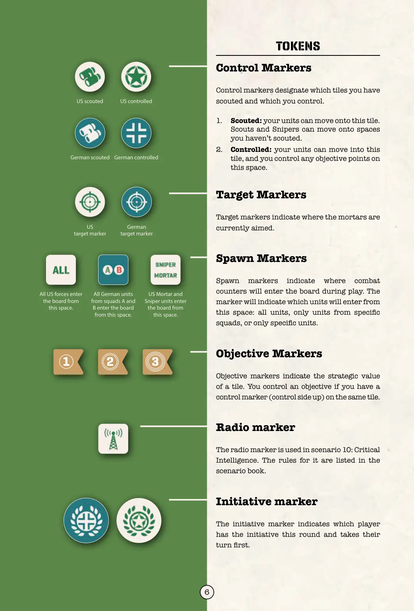
📝 第 6 页 AI 机翻对照（点击展开）
指示物
控制标记
控制标记标示出你已经侦察过并控制的板块。
- 已侦察：你的单位可以移动到此板块上。侦察兵和狙击手可以移动到你尚未侦察的区域。
- 已控制：你的单位可以移动到此板块上，并且你控制此区域上的任何目标点。
目标标记
目标标记标示出迫击炮当前瞄准的位置。
生成标记
生成标记标示出战斗指示物在游戏过程中将进入版图的位置。标记将标示出哪些单位将从这个区域进入：所有单位、仅来自特定小队的单位，或仅特定单位。
目标标记
目标标记标示出一个板块的战略价值。如果你在同一板块上有控制标记（控制面朝上），你就控制了这个目标。
无线电标记
无线电标记在场景10：关键情报中使用。其规则在场景书中列出。
主动权标记
主动权标记标示出本回合哪个玩家拥有主动权并首先进行回合。
所有美军单位
从该区域进入版图。
所有来自A和B小队的德军单位
从该区域进入版图。
美军迫击手和
狙击手单位
从该区域进入版图。
美军已侦察
美军已控制
德军已侦察
德军已控制
美军
目标标记
德军
目标标记
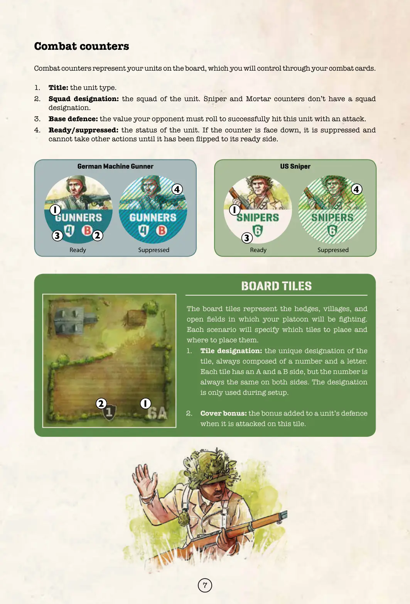
📝 第 7 页 AI 机翻对照（点击展开）
德国机枪手
就绪
压制
美国狙击手
就绪
压制
板块
板块代表你的排将要战斗的树篱、村庄和开阔地。
每个场景会指定放置哪些板块以及放置位置。
1.
板块标识：板块的唯一标识，总是由一个数字和一个字母组成。
每个板块有A面和B面，但数字在两面总是相同的。
标识仅在设置期间使用。
2.
掩护加成：当单位在此板块上被攻击时，其防御获得的加值。
战斗指示物
战斗指示物代表你在版图上的单位，你将通过战斗卡牌控制它们。
1.
名称：单位类型。
2.
小队标识：单位所属的小队。狙击手和迫击炮指示物没有小队标识。
3.
基础防御：你的对手必须投掷出的数值，才能成功用攻击击中此单位。
4.
就绪/压制：单位的状态。如果指示物面朝下，则处于压制状态，直到被翻到就绪面才能执行其他行动。
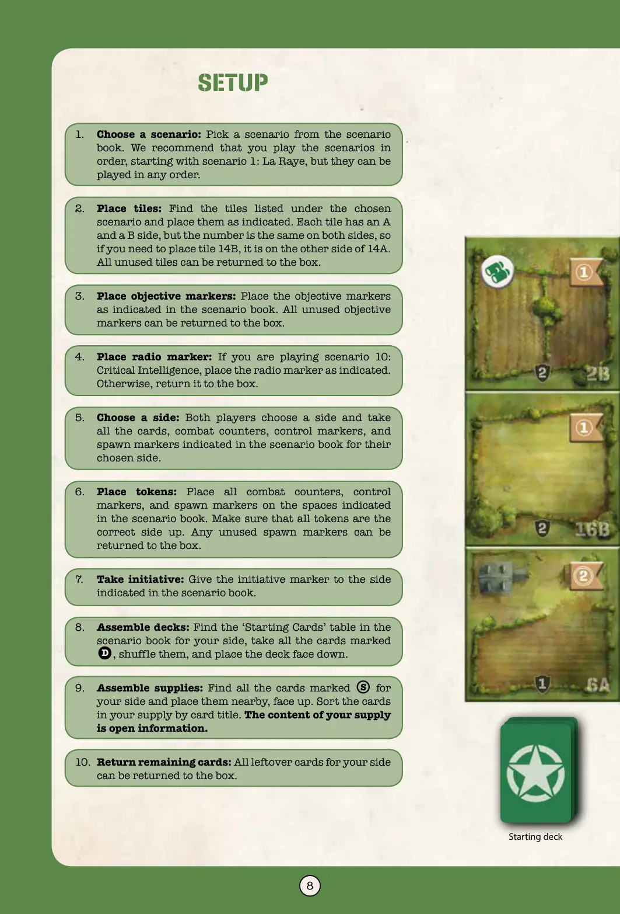
📝 第 8 页 AI 机翻对照（点击展开）
设置
1.
选择一个场景：从场景书中选择一个场景。我们建议您按顺序游玩场景，从场景1：La Raye开始，但它们可以按任何顺序游玩。
2.
放置板块：找到所选场景下列出的板块并按指示放置。每个板块都有A面和B面，但两面上的编号相同，因此如果您需要放置板块14B，它就在14A的另一面上。所有未使用的板块可以放回盒中。
3.
放置目标指示物：按照场景书中的指示放置目标指示物。所有未使用的目标指示物可以放回盒中。
4.
放置无线电指示物：如果您正在游玩场景10：关键情报，请按指示放置无线电指示物。否则，将其放回盒中。
5.
选择一方：双方玩家选择一方，并拿取场景书中为其所选一方列出的所有卡牌、战斗指示物、控制指示物和生成指示物。
6.
放置指示物：将所有战斗指示物、控制指示物和生成指示物放置在场景书中指示的格上。确保所有指示物都朝向正确的面。任何未使用的生成指示物可以放回盒中。
7.
获取先手：将先手指示物交给场景书中指示的一方。
8.
组建牌库：在场景书中找到您一方的"起始卡牌"表，拿取所有标记为D的卡牌，洗牌后牌面朝下放置。
9.
组建补给：找到您一方所有标记为S的卡牌并将其面朝上放在附近。按卡牌标题整理您补给中的卡牌。您补给的内容是公开信息。
10. 剩余卡牌归位：您一方所有剩余的卡牌可以放回盒中。
起始牌库
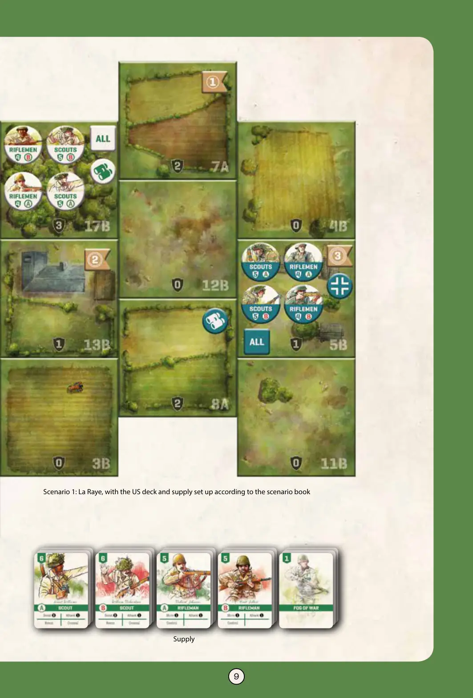
📝 第 9 页 AI 机翻对照（点击展开）
场景1：La Raye，US牌库和补给按场景书设置
补给
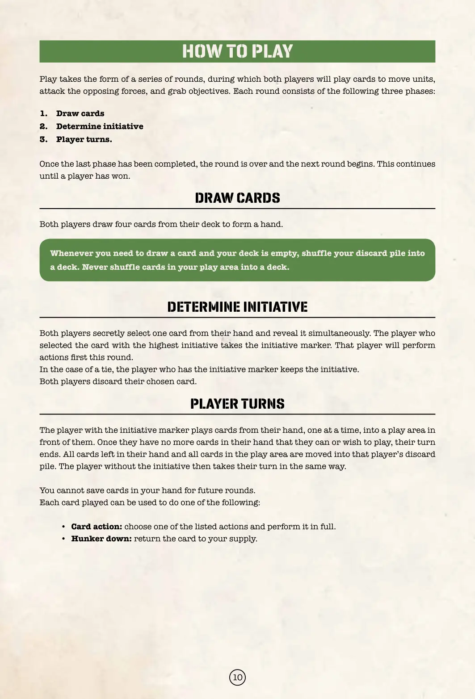
📝 第 10 页 AI 机翻对照（点击展开）
如何游戏
游戏以一系列回合的形式进行，在此期间，两位玩家将打出卡牌来移动单位、攻击敌方力量并夺取目标。每个回合包含以下三个阶段：
1. 摸牌
2. 确定先手
- 玩家回合。
当最后一个阶段完成后，回合结束，下一回合开始。这持续进行，直到有玩家获胜。
摸牌
两位玩家各自从牌库中摸四张牌形成手牌。
当你需要摸牌而你的牌库已空时，将你的弃牌堆洗成新的牌库。切勿将你游戏区域中的牌洗入牌库。
确定先手
两位玩家各自秘密从手牌中选择一张牌，然后同时揭示。选择了先手数值最高的卡牌的玩家将获得先手标记。该玩家将在本回合首先执行行动。
如果平局，则拥有先手标记的玩家保留先手。
两位玩家都将他们选择的牌弃置。
玩家回合
拥有先手标记的玩家将手牌中的卡牌一张一张地打出，放到自己面前的游戏区域中。当他们手中没有可以或想要打出的牌时，他们的回合结束。他们手中剩余的所有卡牌和游戏区域中的所有卡牌都将移至该玩家的弃牌堆。然后，没有先手的玩家以相同方式进行他们的回合。
你不能将手牌中的牌留到未来的回合中使用。
每张打出的卡牌可用于执行以下其中一项：
• 卡牌行动：选择列出的一个行动并完整执行。
• 固守：将卡牌返回到你的供应区。
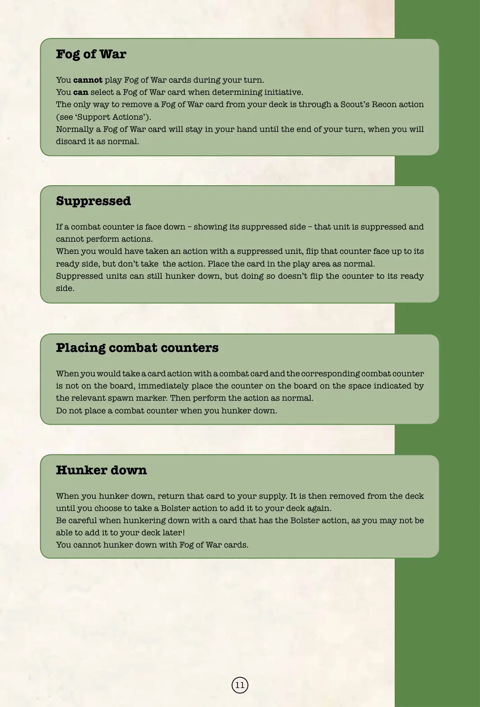
📝 第 11 页 AI 机翻对照（点击展开）
战争迷雾
在你的回合期间，你不能打出战争迷雾卡牌。
在决定行动优先级时，你可以选择一张战争迷雾卡牌。
从牌库中移除战争迷雾卡牌的唯一方式是通过侦察兵的侦察行动（参见"支援行动"）。
通常，战争迷雾卡牌会留在你的手牌中直到你的回合结束，届时你会像平常一样将其弃置。
压制
如果战斗指示物是面朝下的——显示其压制面——那么该单位被压制，无法执行行动。
当你试图用被压制的单位执行行动时，将该指示物翻到其准备面朝上，但不要执行行动。像平常一样将卡牌放置到游戏区域。
被压制的单位仍然可以蹲下，但这样做不会将指示物翻到其准备面。
放置战斗指示物
当你使用战斗卡牌执行卡牌行动，且相应的战斗指示物不在版图上时，立即将该指示物放置在版图上由相关生成标记指示的区域。然后像平常一样执行行动。
当你蹲下时，不要放置战斗指示物。
蹲下
当你蹲下时，将该卡牌返回到你的供给区。然后它将从牌库中移除，直到你选择执行强化行动将其重新添加到你的牌库中。
当你使用具有强化行动的卡牌蹲下时要小心，因为你可能无法稍后将其添加到你的牌库中！
你不能使用战争迷雾卡牌蹲下。
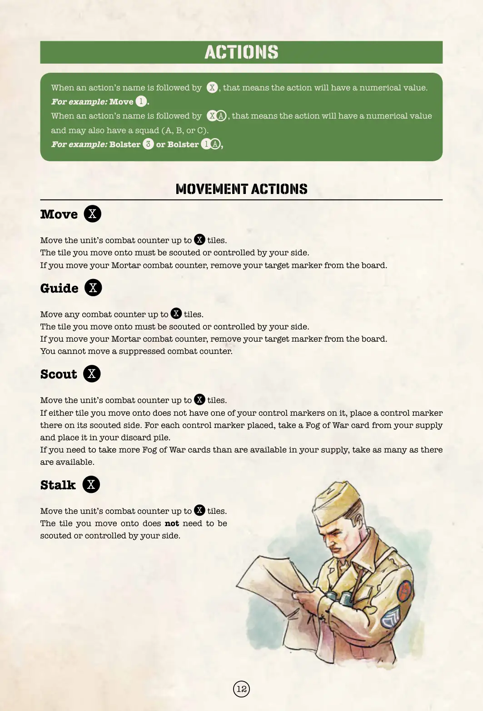
📝 第 12 页 AI 机翻对照（点击展开）
行动
当行动名称后面跟着
，表示该行动将有一个数值。
例如：移动1 。
当行动名称后面跟着
，表示该行动将有一个数值，并且可能还有一个小组（A、B或C）。
例如：强化3 或 强化1 A 。
移动行动
移动
将单位的战斗指示物移动最多X个板块。
你移动到的板块必须已被你的阵营侦察或控制。
如果你移动你的迫击炮战斗指示物，从版图上移除你的目标标记。
引导
将任何战斗指示物移动最多X个板块。
你移动到的板块必须已被你的阵营侦察或控制。
如果你移动你的迫击炮战斗指示物，从版图上移除你的目标标记。
你不能移动被压制的战斗指示物。
侦察
将单位的战斗指示物移动最多X个板块。
如果你移动到的任何一个板块上没有你的控制标记，则在该板块上放置一个控制标记，显示其侦察面。每放置一个控制标记，从你的供给区拿取一张战争迷雾卡牌并将其放入你的弃牌堆。
如果你需要拿取的战争迷雾卡牌数量超过供给区中可用的数量，则拿取所有可用的数量。
潜行
将单位的战斗指示物移动最多X个板块。
你移动到的板块不需要被你的阵营侦察或控制。
X
X
X
X
X
X A
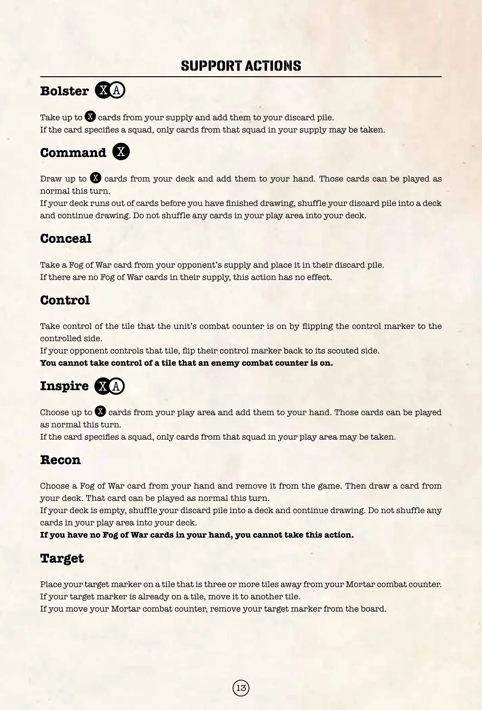
📝 第 13 页 AI 机翻对照（点击展开）
支援行动
巩固
从你的牌库中拿最多X张牌，并将其加入你的弃牌堆。
如果卡牌指定了一个小队，只能从你的牌库中该小队的牌被拿取。
指挥
从你的牌库中摸最多X张牌，并将其加入你的手牌。这些卡牌可以在本回合正常打出。
如果你在摸牌前牌库已空，将你的弃牌堆洗成牌库并继续摸牌。不要将你游戏区域中的任何卡牌洗入牌库。
隐藏
从对手的牌库中拿一张战争迷雾卡牌，并将其放入他们的弃牌堆。
如果他们的牌库中没有战争迷雾卡牌，此行动无效。
控制
翻转控制标记到被控制的一侧，从而夺取单位战斗指示物所在板块的控制权。
如果对手控制着该板块，将他们的控制标记翻回侦察侧。
你不能夺取有敌方战斗指示物所在的板块。
激励
从你的游戏区域中选择最多X张牌，并将其加入你的手牌。这些卡牌可以在本回合正常打出。
如果卡牌指定了一个小队，只能从你的游戏区域中该小队的牌被拿取。
侦察
从你的手牌中选择一张战争迷雾卡牌并将其移出游戏。然后从你的牌库中摸一张牌。该卡牌可以在本回合正常打出。
如果你的牌库为空，将你的弃牌堆洗成牌库并继续摸牌。不要将你游戏区域中的任何卡牌洗入牌库。
如果你的手牌中没有战争迷雾卡牌，你不能执行此行动。
目标
将你的目标指示物放置在距离你的迫击炮战斗指示物三个或更多板块的板块上。
如果你的目标指示物已经在某个板块上，将其移动到另一个板块。
如果你移动你的迫击炮战斗指示物，从版图上移除你的目标指示物。
X A
X
X A
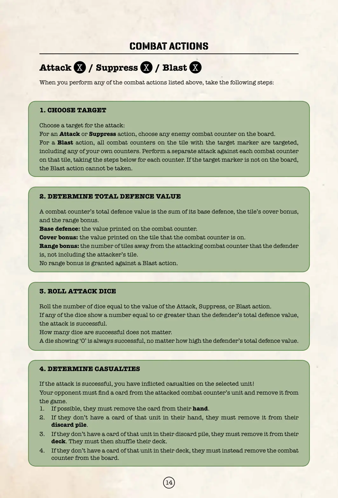
📝 第 14 页 AI 机翻对照（点击展开）
战斗行动
攻击 X / 压制 X / 爆炸 X
当你执行上述任何战斗行动时，请执行以下步骤：
1. 选择目标
为攻击选择一个目标：
对于攻击或压制行动，选择版图上的任何敌方战斗指示物。
对于爆炸行动，目标标记所在板块上的所有战斗指示物都会被锁定为目标，包括你自己的任何指示物。对该板块上的每个战斗指示物执行一次单独的攻击，对每个指示物执行以下步骤。如果目标标记不在版图上，则无法执行爆炸行动。
2. 确定总防御值
战斗指示物的总防御值是其基础防御、板块的掩护加成和射程加成的总和。
基础防御：印在战斗指示物上的数值。
掩护加成：战斗指示物所在板块上印制的数值。
射程加成：防御者距离攻击战斗指示物的板块数，不包括攻击者的板块。
对爆炸行动不给予射程加成。
3. 投掷攻击骰子
投掷数量等于攻击、压制或爆炸行动数值的骰子。
如果任何骰子显示的数字大于或等于防御者的总防御值，则攻击成功。
有多少骰子成功并不重要。
显示"0"的骰子总是成功的，无论防御者的总防御值有多高。
4. 确定伤亡
如果攻击成功，你对选定的单位造成了伤亡！
你的对手必须从被攻击战斗指示物的单位中找到一张牌并将其从游戏中移除。
- 如果可能，他们必须从手牌中移除该牌。
- 如果他们手牌中没有该单位的牌，他们必须从弃牌堆中移除它。
- 如果他们弃牌堆中没有该单位的牌，他们必须从牌库中移除它。然后他们必须洗牌牌库。
- 如果他们牌库中没有该单位的牌，他们必须改为从版图上移除该战斗指示物。
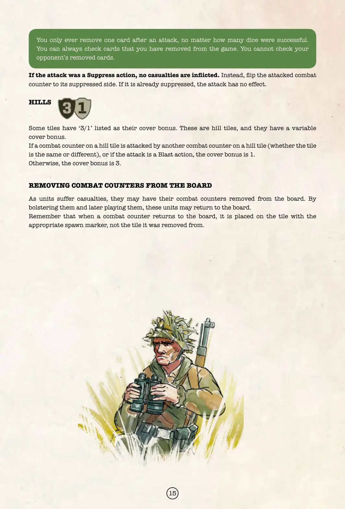
📝 第 15 页 AI 机翻对照（点击展开）
无论骰子成功多少次，你每次攻击后只移除一张卡牌。
你随时可以查看你已移出游戏的卡牌。你不能查看对手的移出卡牌。
如果攻击是压制行动，不会造成任何伤亡。相反，将被攻击的战斗指示物翻到被压制的一面。如果它已经被压制，则攻击无效。
丘陵
一些板块上列有"3/1"作为其掩护加成。这些是丘陵板块，它们具有可变的掩护加成。
如果一个丘陵板块上的战斗指示物被另一个丘陵板块（无论是否相同板块）上的战斗指示物攻击，或者如果攻击是爆炸行动，则掩护加成为1。
否则，掩护加成为3。
从版图上移除战斗指示物
随着单位遭受伤亡，它们的战斗指示物可能会从版图上移除。通过增强它们然后打出这些卡牌，这些单位可以返回版图。
请注意，当战斗指示物返回版图时，它被放置在有相应生成标记的板块上，而不是它被移除的板块。
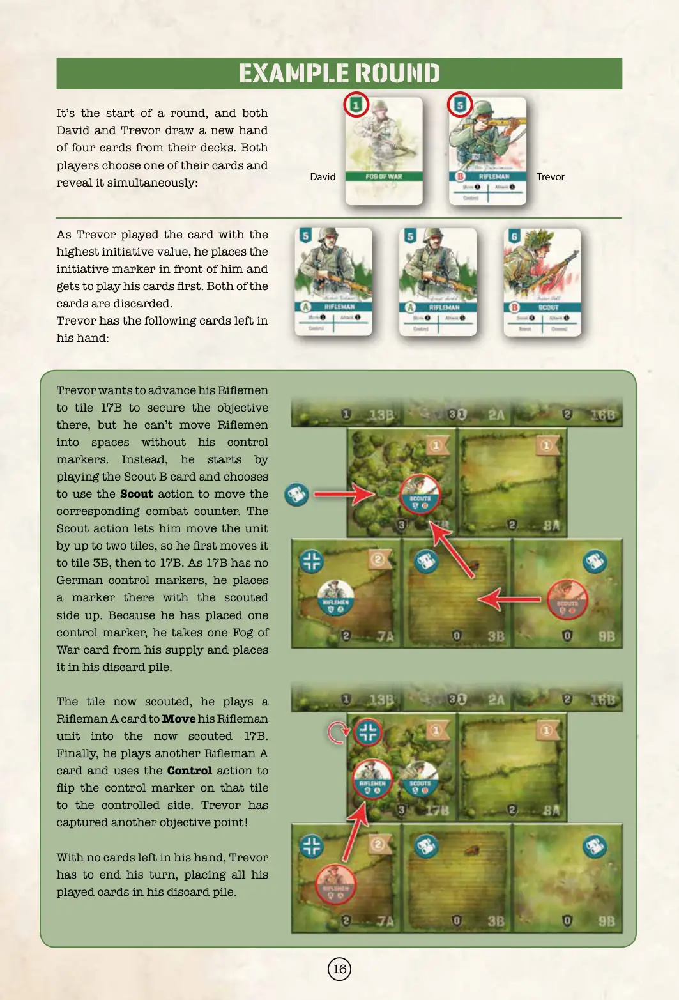
📝 第 16 页 AI 机翻对照（点击展开）
示例回合
一轮开始，大卫和特雷弗都从他们的牌库中抽取四张新手牌。两位玩家各自选择一张卡牌并同时揭示：
由于特雷弗打出了具有最高行动价值的卡牌，他将行动标记放在自己面前，并可以优先打出他的卡牌。这两张卡牌都被弃置。
特雷弗手牌中剩余的卡牌如下：
特雷弗想将他的步枪兵移动到17B板块以占领那里的目标，但他不能将步枪兵移动到没有他控制标记的区域。
相反，他首先打出侦察B卡牌，并选择使用侦察行动来移动相应的战斗指示物。侦察行动允许他将单位移动最多两个板块，所以他先将它移动到3B板块，然后移动到17B板块。由于17B没有德国控制标记，他在那里放置一个标记，侦察面朝上。因为他放置了一个控制标记，他从他的供应中取一张战争迷雾卡牌，并将其放入他的弃牌堆。
板块被侦察后，他打出一张步枪兵A卡牌，将他的步枪兵单位移动到已被侦察的17B板块。
最后，他打出另一张步枪兵A卡牌，并使用控制行动将该板块上的控制标记翻到控制面。特雷弗又占领了一个目标点！
由于手牌已空，特雷弗必须结束他的回合，将他打出的所有卡牌放入他的弃牌堆。
大卫
特雷弗
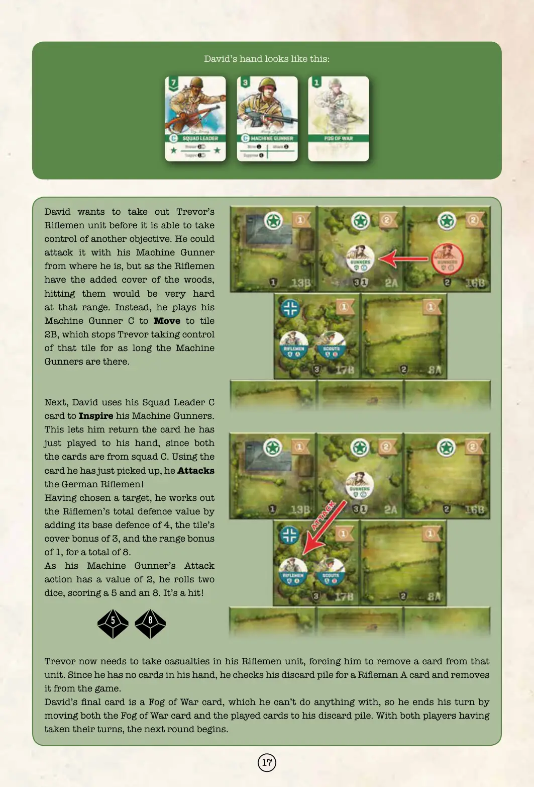
📝 第 17 页 AI 机翻对照（点击展开）
David的手牌如下：
David想在Trevor的
步枪兵单位能够控制另一个目标之前将其消灭。他可以从当前位置用他的机枪兵攻击它，但由于步枪兵有树林的额外掩护，在那个距离击中它们将非常困难。相反，他打出他的C组机枪兵牌，移动到板块2B，只要机枪兵在那里，Trevor就无法控制该板块。
接下来，David使用他的C组指挥官牌来激励他的机枪兵。这让他能将刚刚打出的牌收回手牌，因为这两张牌都来自C组。使用他刚摸到的牌，他攻击了德国步枪兵！
选定目标后，他通过将步枪兵的基础防御值4、板块的掩护加成3和距离加成1相加，计算出步枪兵的总防御值为8。
由于他的机枪兵的攻击行动值为2，他掷出两个骰子，得到5和8。命中了！
Trevor现在需要在他的步枪兵单位中承受伤亡，迫使他移除该单位中的一张牌。由于他手牌中没有牌，他检查他的弃牌堆，找到一张步枪兵A牌并将其移出游戏。
David的最后一张牌是战争迷雾牌，他无法用它做任何事情，所以他通过将战争迷雾牌和已打出的牌移到他的弃牌堆来结束他的回合。两位玩家都已完成回合，下一轮开始。
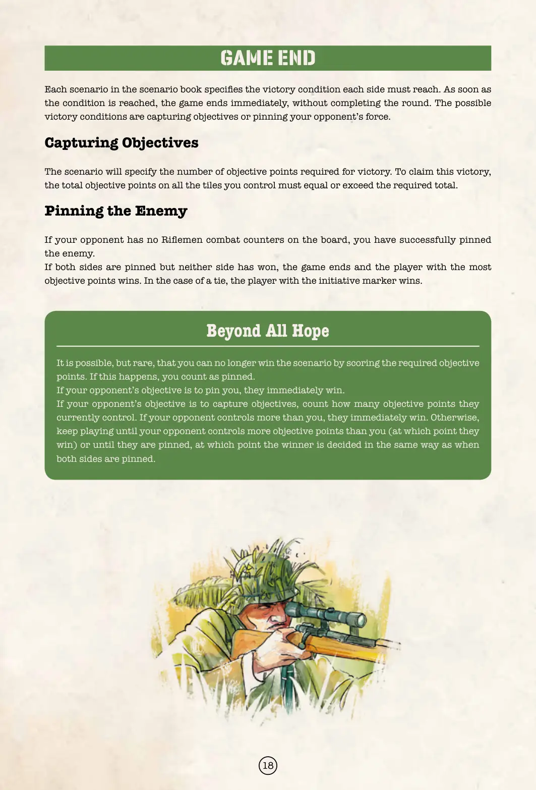
📝 第 18 页 AI 机翻对照（点击展开）
游戏结束
场景书中的每个场景都规定了每方必须达到的胜利条件。一旦条件达成，游戏立即结束，不完成当前回合。可能的胜利条件是占领目标或压制对手的部队。
占领目标
场景会规定胜利所需的目标点数。要赢得此胜利，你所控制的所有板块上的目标点总数必须等于或超过所需总数。
压制敌人
如果你的对手在版图上没有步枪兵战斗指示物，你就成功压制了敌人。
如果双方都被压制但都没有获胜，游戏结束，拥有最多目标点的玩家获胜。如果平局，拥有主动标记的玩家获胜。
超越所有希望
你可能无法通过获得所需目标点数来赢得场景，这种情况虽然罕见但有可能。如果发生这种情况，你被视为被压制。
如果对手的目标是压制你，他们立即获胜。
如果对手的目标是占领目标，计算他们当前控制的目标点数。如果对手控制的目标点数比你多，他们立即获胜。否则，继续游戏直到对手控制的目标点数超过你（此时他们获胜）或直到他们被压制，此时获胜者的决定方式与双方都被压制时相同。
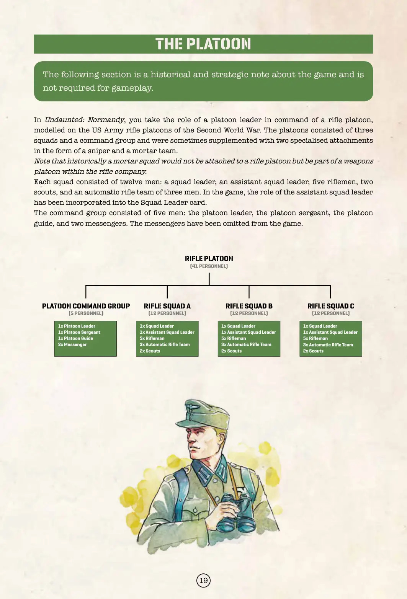
📝 第 19 页 AI 机翻对照（点击展开）
排
以下部分是关于游戏的历史和战略说明，游戏进行时不需要参考。
在《无畏：诺曼底》(Undaunted: Normandy)中，你扮演一名排长，指挥一个步枪排，该排基于二战时期美国陆军步枪排编制。排由三个班和一个指挥组组成，有时还会补充两名专业人员，即一名狙击手和一名迫击炮小组。
请注意，历史上迫击炮班不会隶属于步枪排，而是步枪连内武器排的一部分。
每个班由十二人组成：一名班长、一名副班长、五名步枪手、两名侦察兵，以及一个由三人组成的自动步枪小组。在游戏中，副班长的角色已整合到班长卡牌中。
指挥组由五人组成：排长、排军士、排向导和两名传令兵。游戏中已省略传令兵。
步枪排
(41人)
排指挥组
(5人)
步枪班A
(12人)
步枪班B
(12人)
步枪班C
(12人)
1名排长
1名排军士
1名排向导
2名传令兵
1名班长
1名副班长
5名步枪手
3名自动步枪小组
2名侦察兵
1名班长
1名副班长
5名步枪手
3名自动步枪小组
2名侦察兵
1名班长
1名副班长
5名步枪手
3名自动步枪小组
2名侦察兵
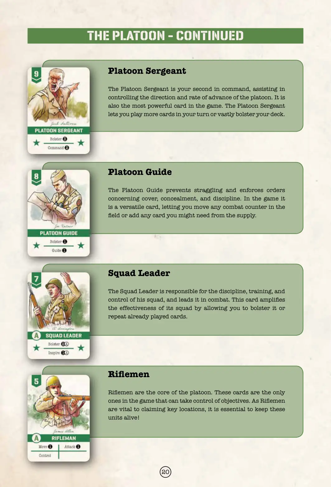
📝 第 20 页 AI 机翻对照（点击展开）
排 - 续
排军士
排军士是你的副手，协助控制排的前进方向和速度。它也是游戏中最强的卡牌。排军士让你在你的回合中可以打出更多卡牌，或者大幅增强你的牌库。
排向导
排向防防止掉队并执行关于掩护、隐蔽和纪律的命令。在游戏中，它是一张多功能卡牌，让你可以移动战场上的任何战斗指示物，或者从补给中添加任何你可能需要的卡牌。
班长
班长负责其班的纪律、训练和控制，并在战斗中带领该班。这张卡牌通过让你增强该班或重复已经打出的卡牌，来提高其效力。
步枪手
步枪手是排的核心。这些卡牌是游戏中唯一能够控制目标的卡牌。由于步枪手对于占领关键位置至关重要，保持这些单位存活是必不可少的！
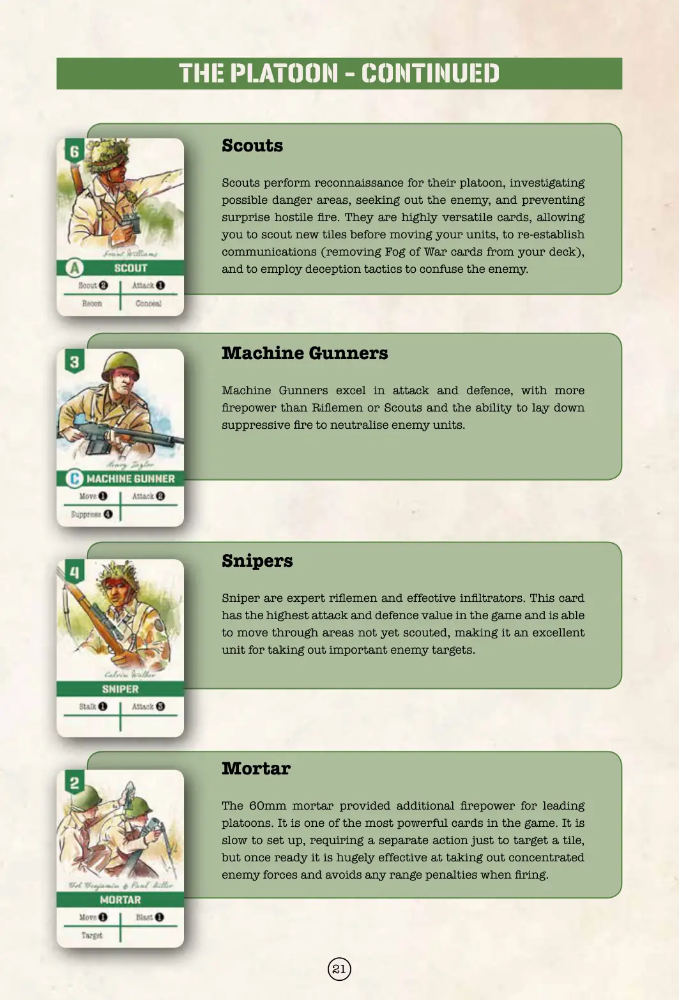
📝 第 21 页 AI 机翻对照（点击展开）
排连 - 续
侦察兵
侦察兵为他们的排执行侦察任务，调查可能的危险区域，寻找敌人，并防止敌方突然开火。他们是多才多艺的卡牌，允许你在移动单位前侦察新的板块，重新建立通讯（从你的牌库中移除战争迷雾卡牌），并使用欺骗战术来迷惑敌人。
机枪手
机枪手在攻击和防御方面表现出色，比步枪手或侦察兵拥有更强的火力，并且能够进行压制射击以压制敌方单位。
狙击手
狙击手是专业的步枪手和有效的渗透者。这张卡牌在游戏中拥有最高的攻击和防御值，并且能够穿过尚未侦察的区域，使其成为消灭重要敌方目标的绝佳单位。
迫击炮
60毫米迫击炮为主要排提供了额外的火力。它是游戏中威力最大的卡牌之一。它的设置速度较慢，需要单独的行动来瞄准一个板块，但一旦准备就绪，它在消灭集中的敌方部队方面非常有效，并且在射击时避免了任何距离惩罚。
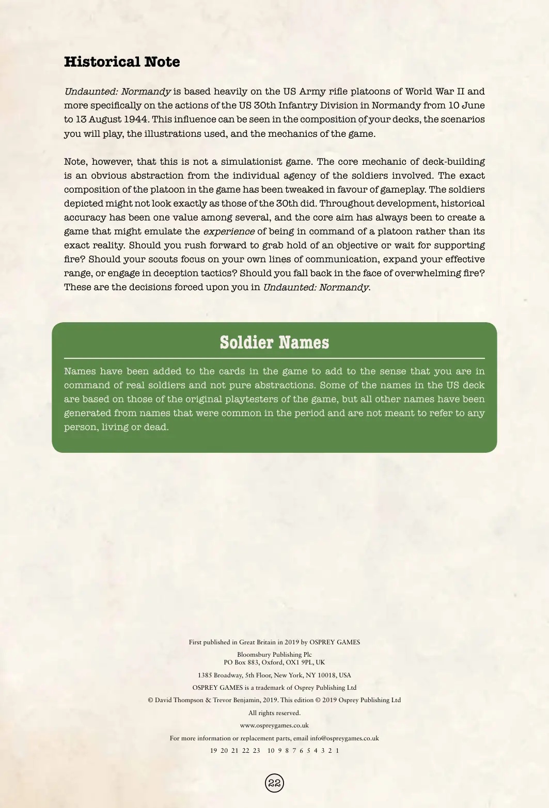
📝 第 22 页 AI 机翻对照（点击展开）
首次于2019年在英国由OSPREY GAMES出版
Bloomsbury Publishing Plc
PO Box 883, Oxford, OX1 9PL, UK
1385 Broadway, 5th Floor, New York, NY 10018, USA
OSPREY GAMES是Osprey Publishing Ltd的商标
© David Thompson & Trevor Benjamin, 2019. 本版© 2019 Osprey Publishing Ltd
保留所有权利。
www.ospreygames.co.uk
如需更多信息或替换部件，请发送邮件至info@ospreygames.co.uk
19 20 21 22 23 10 9 8 7 6 5 4 3 2 1
历史说明
《无畏：诺曼底》(Undaunted: Normandy) heavily based heavily on the US Army rifle platoons of World War II and
more specifically on the actions of the US 30th Infantry Division in Normandy from 10 June
to 13 August 1944. This influence can be seen in the composition of your decks, the scenarios
you will play, the illustrations used, and the mechanics of the game.
Note, however, that this is not a simulationist game. The core mechanic of deck-building
is an obvious abstraction from the individual agency of the soldiers involved. The exact
composition of the platoon in the game has been tweaked in favour of gameplay. The soldiers
depicted might not look exactly as those of the 30th did. Throughout development, historical
accuracy has been one value among several, and the core aim has always been to create a
game that might emulate the experience of being in command of a platoon rather than its
exact reality. Should you rush forward to grab hold of an objective or wait for supporting
fire? Should your scouts focus on your own lines of communication, expand your effective
range, or engage in deception tactics? Should you fall back in the face of overwhelming fire?
These are the decisions forced upon you in Undaunted: Normandy.
士兵姓名
游戏中的卡牌上添加了姓名，以增强您指挥真实士兵而非纯粹抽象概念的感觉。美国牌库中的一些姓名基于游戏的原始测试者，但所有其他姓名都是根据当时常见的姓名生成的，并非指代任何活着或已故的特定人物。
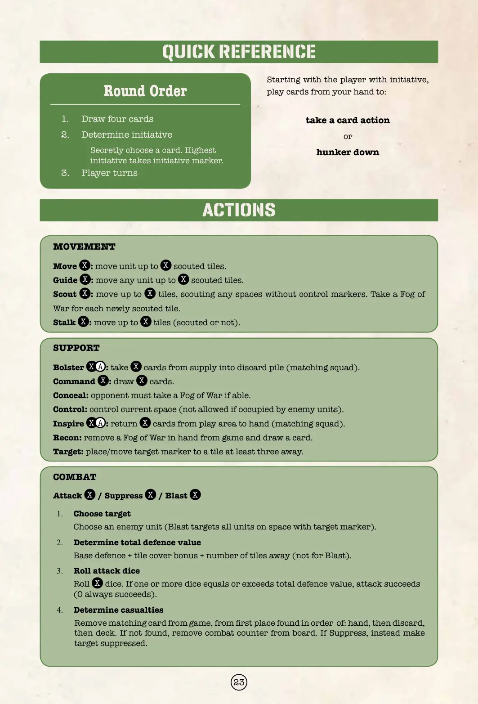
📝 第 23 页 AI 机翻对照（点击展开）
快速参考
行动
移动
移动 X：移动单位最多 X 个已侦察的板块。
引导 X：移动任意单位最多 X 个已侦察的板块。
侦察 X：移动最多 X 个板块，侦察任何没有控制标记的区域。为每个新侦察的板块获得一张战争迷雾。
潜行 X：移动最多 X 个板块（已侦察或未侦察）。
支援
增强 X A：从牌库抽取 X 张牌到弃牌堆（匹配小队）。
指挥 X：摸 X 张牌。
隐藏：如果可能，对手必须拿取一张战争迷雾。
控制：控制当前区域（如果有敌方单位占据则不允许）。
激励 X A：将 X 张牌从游戏区域返回到手牌（匹配小队）。
侦察：从游戏中移除手牌中的一张战争迷雾并摸一张牌。
目标：将目标标记放置/移动到至少相距三个的板块上。
战斗
攻击 X / 压制 X / 爆破 X
1.
选择目标
选择一个敌方单位（爆破会攻击目标标记所在区域的所有单位）。
2.
确定总防御值
基础防御 + 板块覆盖加成 + 相隔板块数（爆破不计）。
3.
投掷攻击骰子
投掷 X 个骰子。如果一个或多个骰子结果等于或超过总防御值，攻击成功（0 总是成功）。
4.
确定伤亡
按顺序从以下位置移除匹配的牌：手牌，然后弃牌堆，然后牌库。如果找不到，则从版图上移除战斗指示物。如果是压制，则改为使目标被压制。
轮次顺序
1.
摸四张牌
2.
确定先手
秘密选择一张牌。最高先手获得先手标记。
3.
玩家回合
从拥有先手的玩家开始，从手牌中打出牌以：
执行卡牌行动
或者
固守阵地